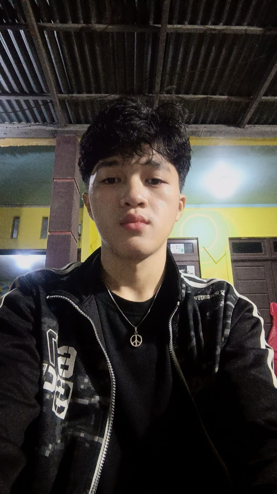

TAHUN SEKARANG
Mahasiswa — Universitas Tanjungpura
Program studi: Sistem informasi
Mempelajari dasar teknologi informasi, pemrograman, dan sistem informasi.
MAHASISWA • CALON PROFESIONAL IT
Saya sedang belajar teknologi dan pengembangan web, serta senang mencoba hal baru untuk mengembangkan kemampuan.

01 / TENTANG SAYA
Saya percaya kemampuan hebat dibangun dari rasa ingin tahu, konsistensi, dan keberanian untuk mencoba.
Saya adalah mahasiswa yang tertarik dengan dunia teknologi informasi. Saat ini, saya sedang mempelajari dasar-dasar pemrograman, pengembangan website, dan cara memanfaatkan teknologi untuk menyelesaikan masalah.
Di luar kegiatan belajar, saya suka bermain game. Saya ingin terus menambah pengalaman, mengembangkan keterampilan, dan membuat karya yang bermanfaat.
02 / PERJALANAN
Perjalanan saya sejauh ini dan hal-hal yang sedang saya kembangkan.
Program studi: Sistem informasi
Mempelajari dasar teknologi informasi, pemrograman, dan sistem informasi.
Riwayat pendidikan
Tambahkan kegiatan, organisasi, kepanitiaan, atau prestasi jika ada.
HTML, CSS, JavaScript, dan Python
Membangun fondasi pemrograman melalui latihan dan proyek kecil.
03 / KARYA PILIHAN
proyek yang saat ini saya kerjakan.
LATIHAN PEMROGRAMAN
Program latihan menggunakan input, percabangan, perulangan, dan list.
Python dasarPENGEMBANGAN WEB
Website responsif untuk memperkenalkan diri, pendidikan, minat, dan kontak.
HTML • CSS • JS04 / KONTAK
Punya pertanyaan, ide, atau ingin berdiskusi? Kamu bisa menghubungi saya melalui tautan berikut.